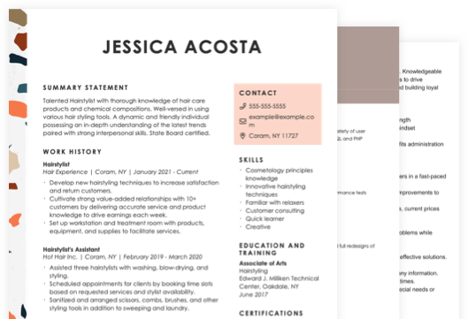
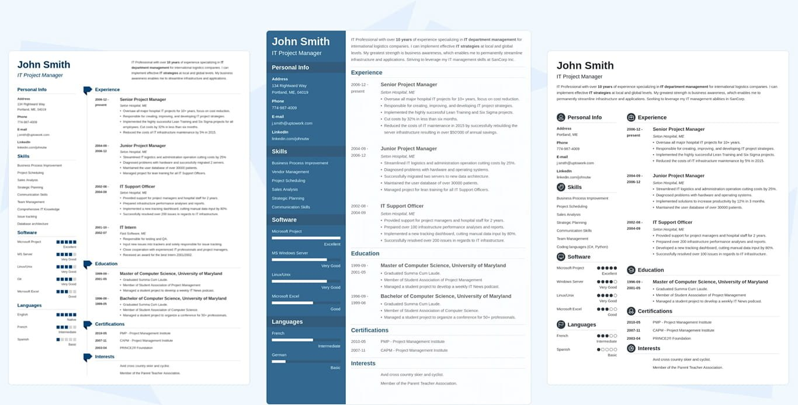

Homepage Banner Image - PNG Image (69.7 KB)
AVIF Image (15 KB) with Fallback of WEBP Image (32 KB) with Fallback of PNG

Hero Banner Head Term Resume - PNG Image (90.7 KB)
AVIF Image (14.4 KB) with Fallback of WEBP Image (18.3 KB) with Fallback of PNG
Combination Resume Format BG - PNG Image (253 KB)
AVIF Image (11.9 KB) with Fallback of WEBP Image (20.8 KB) with Fallback of PNG

Carousel Resume Templates - PNG Image (121 KB)
AVIF Image (49 KB) with Fallback of WEBP Image (62.3 KB) with Fallback of PNG